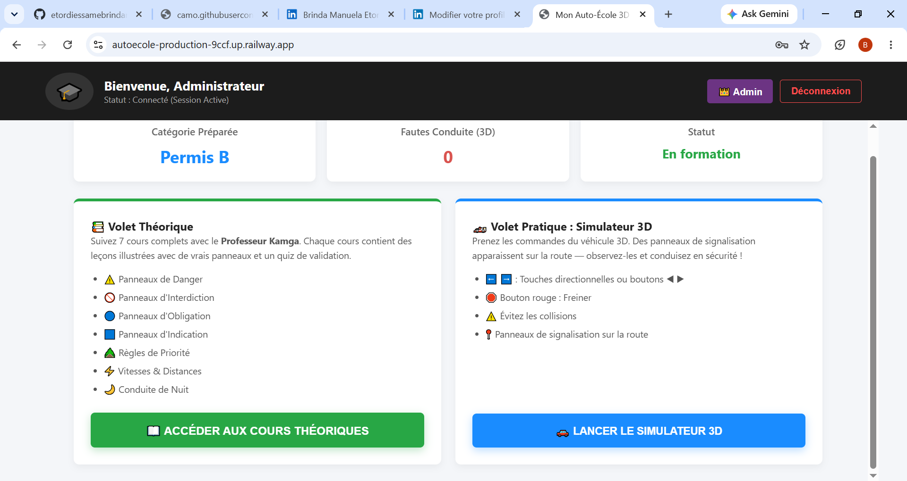

Mes Projets

Auto-école 3D
Plateforme immersive d'apprentissage de la conduite utilisant PHP, JavaScript, MySQL et Three.js. Ce projet tutoré a obtenu la note de 17,66/20.

Gestion des fournitures
Application web de gestion des fournitures et consommables académiques, développée durant mon BTS en Génie Logiciel.

Plateforme Technicien - Client
Plateforme permettant aux clients de trouver rapidement un technicien qualifié selon leurs besoins.